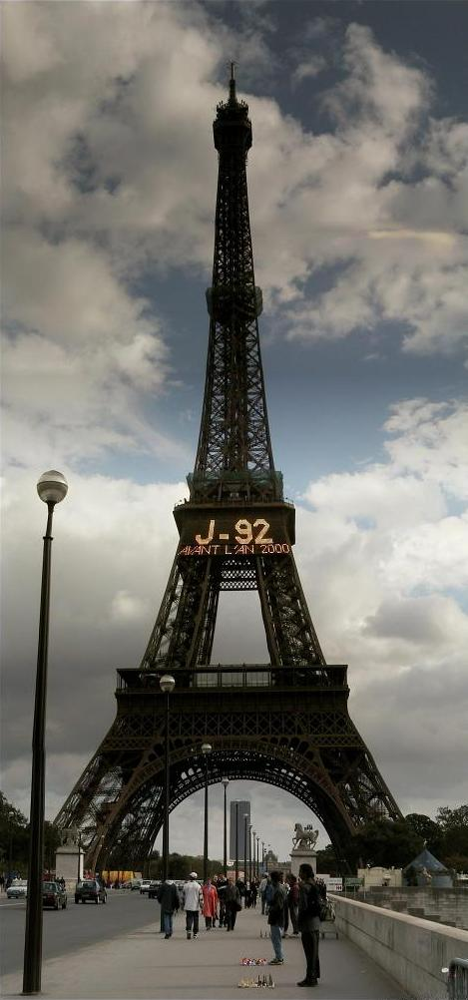

        * Add a new marker to the markers layer given the following lonlat, 
         *     popupClass, and popup contents HTML. Also allow specifying 
         *     whether or not to give the popup a close box.
         * 
         * Parameters:
         * ll - {<OpenLayers.LonLat>} Where to place the marker
         * popupClass - {<OpenLayers.Class>} Which class of popup to bring up 
         *     when the marker is clicked.
         * popupContentHTML - {String} What to put in the popup
         * closeBox - {Boolean} Should popup have a close box?
         * overflow - {Boolean} Let the popup overflow scrollbars?
         */
        function addMarker(ll, popupClass, popupContentHTML, closeBox, overflow) {

            var feature = new OpenLayers.Feature(markers, ll); 
            feature.closeBox = closeBox;
            feature.popupClass = popupClass;
            feature.data.popupContentHTML = popupContentHTML;
            feature.data.overflow = (overflow) ? "auto" : "hidden";
                    
            var marker = feature.createMarker();

            var markerClick = function (evt) {
                if (this.popup == null) {
                    this.popup = this.createPopup(this.closeBox);
                    map.addPopup(this.popup);
                    this.popup.show();
                } else {
                    this.popup.toggle();
                }
                currentPopup = this.popup;
                OpenLayers.Event.stop(evt);
            };
            marker.events.register("mousedown", feature, markerClick);

            markers.addMarker(marker);
        }

    </script>
  </head>
  <body onload="init()">
  <h1 id="title">Popup Matrix</h1>

  <div id="tags">
  popup, popups
  </div>
      <p id="shortdesc">
          All kinds of different popup configurations.
      </p>

      <div id="map" class="smallmap"></div>

        <!-- preloading these images so the autosize will work correctly -->
        </img>
        </img>
        </img>

       <p> All of the images in this file a pre-cached, meaning they are 
           loaded immediately when you load the page (they are just placed 
           far offscreen, that's why you don't see them). 
       </p>
       <br>    
       <p> The only image that is *not* preloaded is img/small.jpg, the brazilian
           flag. We do this in order to test out to make sure that our auto-sizing
             code does in fact activate itself as the images load. To verify 
             this, clear your cache and reload this example page. Click on 
             any of the markers in the 'AutoSize' row. If the popup autosizes
             to correctly contain the entire flag: golden. If the popup is 
             tiny and you can only see a corner of it, then this code is broken.
        </p>

      <br/>      

      
   </div>
  </body>
</html>
